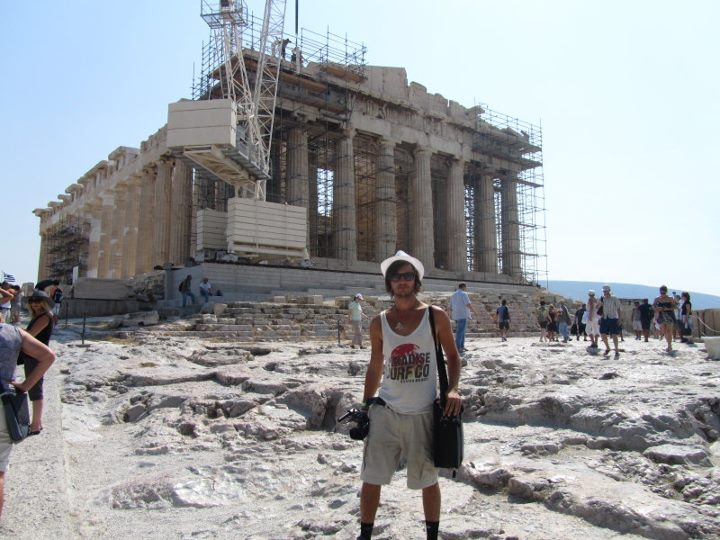

Journey Through Athens: Your Comprehensive Travel Guide
Introduction
Athens, the historic capital of Greece, is a city where ancient history seamlessly blends with modern life. Known as the cradle of Western civilization and democracy, Athens offers a rich tapestry of archaeological wonders, vibrant neighborhoods, and stunning Mediterranean views. Whether you're an art enthusiast, history buff, or simply seeking a dynamic urban experience, Athens promises an unforgettable journey.
How to Get There
Athens is well-connected to various parts of Greece and the world. Here’s how you can reach this magnificent city:
- By Air: Athens International Airport (Eleftherios Venizelos) is the main gateway, serving numerous international and domestic flights. From the airport, you can take the Metro (Line 3), express buses, taxis, or private transfers to reach the city center.
- By Train: While Athens is not a major hub for international train travel, it is connected to other Greek cities via the national rail network. The main railway station is Athens Railway Station (Larissa Station).
- By Bus: KTEL buses operate from various cities in Greece, offering affordable and convenient travel options to Athens. Long-distance buses connect Athens to cities like Thessaloniki, Patras, and Heraklion.
- By Car: Athens is accessible by road through the Attiki Odos (A6) highway, connecting the city to other parts of Greece. Driving provides flexibility to explore surrounding areas at your own pace.
- By Ferry: For those traveling from the islands, ferries connect Athens (Piraeus and Rafina ports) to numerous Greek islands, including Mykonos, Santorini, and Crete.
Top Attractions in Athens
1. Acropolis and Parthenon
No visit to Athens is complete without exploring the Acropolis, a UNESCO World Heritage Site. Dominating the city skyline, the Parthenon stands as a testament to ancient Greek architecture and philosophy. Visitors can marvel at the intricate sculptures and panoramic views of Athens from this historic citadel.
2. Ancient Agora
The Ancient Agora was the heart of ancient Athens, serving as a marketplace and a hub for political and social activities. Today, it offers a fascinating glimpse into classical Greece, with well-preserved temples, stoas, and the remarkable Hephaisteion (Temple of Hephaestus).
3. National Archaeological Museum
Home to one of the world's finest collections of ancient Greek art, the National Archaeological Museum boasts artifacts spanning over 5,000 years. Highlights include the Mask of Agamemnon, the Antikythera Mechanism, and an extensive array of sculptures, pottery, and jewelry.
4. Plaka Neighborhood
Known as the "Neighborhood of the Gods," Plaka is Athens' oldest district, nestled beneath the Acropolis. Its charming streets are lined with neoclassical buildings, boutique shops, traditional tavernas, and vibrant cafes, making it a perfect area for leisurely exploration.
5. Mount Lycabettus
Offering some of the best views of Athens, Mount Lycabettus is a prominent hill that rises 300 meters above the city. Visitors can hike to the summit or take the funicular railway. At the top, you'll find the Chapel of St. George and a panoramic view that captures the essence of Athens.
Tips and Recommendations
Do’s and Don’ts
- Do: Wear comfortable walking shoes, as Athens involves a lot of walking, especially on uneven surfaces near archaeological sites.
- Don’t: Miss the opportunity to visit lesser-known museums and galleries that showcase contemporary Greek art.
- Do: Bring a hat, sunglasses, and sunscreen, particularly if visiting during the summer months.
- Don’t: Ignore the local customs and etiquette, especially when visiting religious sites.
- Do: Take advantage of the extensive public transportation system, including the Metro, buses, and trams, to navigate the city efficiently.
- Don’t: Engage in loud or disruptive behavior in public places, as Greeks value politeness and respect.
Packing List
- Comfortable walking shoes.
- Weather-appropriate clothing (layers for spring/fall, sun protection for summer).
- Reusable water bottle to stay hydrated while exploring.
- A backpack for carrying snacks and essentials.
- A map or guidebook to navigate Athens’ sprawling attractions.
- Insect repellent and personal hygiene items.
- Portable charger for your electronic devices.
- Light jacket or sweater for cooler evenings.
- Umbrella or raincoat for unexpected weather changes.
- Basic Greek phrases to enhance your interactions with locals.
Costs
- Entry Fees: Most archaeological sites and museums charge an entrance fee (e.g., €20 for the Acropolis).
- Transportation: A 24-hour public transport ticket costs around €4.50 and covers the Metro, buses, and trams.
- Food: Meals at local tavernas and restaurants range from €10-25 per person, depending on the establishment.
- Accommodation: Prices vary widely based on location and quality, from budget hostels at €20 per night to luxury hotels exceeding €200 per night.
Currency and Money Matters
The official currency in Athens, as in the rest of Greece, is the Euro (€). Here's what you need to know about managing your finances during your trip:
Currency Exchange
Currency exchange services are widely available in Athens, including at the airport, banks, and authorized exchange counters. It's advisable to exchange a small amount of money upon arrival for immediate expenses.
ATMs and Banking
ATMs are readily accessible throughout the city, especially in major districts and tourist areas. Most ATMs accept international debit and credit cards. However, it's a good practice to inform your bank of your travel plans to avoid any issues with card usage abroad.
Credit Cards
Credit cards (Visa and Mastercard) are widely accepted in hotels, restaurants, and larger shops. However, smaller establishments and street vendors may prefer cash, so it's recommended to carry some euros for such situations.
Tips
Tipping in Athens is appreciated but not mandatory. A tip of 5-10% is common for good service in restaurants, while rounding up the bill is sufficient for cafes and casual dining.
Practical Information
Best Time to Visit
The optimal times to visit Athens are during the spring (April to June) and fall (September to November). During these periods, the weather is mild, and the tourist crowds are more manageable compared to the peak summer months. Springtime brings blooming flowers and pleasant temperatures, while autumn offers crisp air and colorful foliage.
Getting There
Athens is well-connected by air, rail, and road:
- By Air: Athens International Airport (Eleftherios Venizelos) is the main gateway, serving numerous international and domestic flights. From the airport, you can take the Metro (Line 3), express buses, taxis, or private transfers to reach the city center.
- By Train: While Athens is not a major hub for international train travel, it is connected to other Greek cities via the national rail network. The main railway station is Athens Railway Station (Larissa Station).
- By Car: Athens is accessible via the Attiki Odos (A6) highway, connecting the city to other parts of Greece. The drive from the airport to the city center typically takes around 40 minutes, depending on traffic.
- By Bus: KTEL buses operate from various cities in Greece, offering affordable and convenient travel options to Athens. Long-distance buses connect Athens to cities like Thessaloniki, Patras, and Heraklion.
- By Ferry: For those traveling from the islands, ferries connect Athens (Piraeus and Rafina ports) to numerous Greek islands, including Mykonos, Santorini, and Crete.
Language
The official language is Greek. While English is commonly spoken in tourist areas, learning a few basic Greek phrases can enhance your interactions with locals and enrich your travel experience.
Health and Safety
Athens is generally safe for travelers, but it's important to take standard precautions:
- Stay hydrated and protect yourself from the sun, especially during summer months.
- Be cautious with your belongings, particularly in crowded areas and on public transport.
- Use reputable tour operators and guides for activities and excursions.
- Ensure you have appropriate travel insurance covering health and activities.
Cultural Immersion
Immerse yourself in Athens’s rich culture through various local traditions and activities:
- Palace Tours: Explore the grandeur of Athens’s numerous palaces and historical buildings, each with its unique architectural style and historical significance.
- Local Markets: Visit markets like the Monastiraki Flea Market and Varvakios Agora to experience the local cuisine, crafts, and vibrant community life.
- Art and Music: Attend performances at local theaters and concert halls, or visit art galleries showcasing regional artists.
- Festivals: Participate in events such as the Athens and Epidaurus Festival, which celebrates theater, music, and dance, or the annual Athens Marathon to experience local festivities.
- Historical Workshops: Engage in workshops that delve into Athens’s history, architecture, and cultural heritage, offering a deeper understanding of the city's legacy.
- Boat Tours: Take a boat tour along the Athenian Riviera or around the Saronic Gulf to enjoy scenic views of Athens’s landscapes and maritime beauty.
Food and Cuisine
Athens offers a delightful mix of traditional Greek cuisine and modern culinary innovations. Here are some must-try dishes and dining experiences:
- Moussaka: A layered casserole dish made with eggplant, minced meat, and béchamel sauce.
- Souvlaki: Grilled skewers of meat, typically served with pita bread, tomatoes, onions, and tzatziki sauce.
- Gyro: Similar to souvlaki, gyros are made with meat cooked on a vertical rotisserie and served in pita bread with various toppings.
- Tzatziki: A refreshing dip made from yogurt, cucumber, garlic, and dill, perfect for pairing with grilled meats.
- Spanakopita: A savory pastry filled with spinach, feta cheese, and herbs, wrapped in flaky phyllo dough.
- Baklava: A sweet dessert made of layers of phyllo dough filled with chopped nuts and sweetened with honey or syrup.
- Fresh Seafood: Enjoy freshly caught fish and seafood dishes at coastal tavernas along the Athenian Riviera.
- Local Wines: Savor a variety of Greek wines, including Assyrtiko and Agiorgitiko, available at numerous wine bars and restaurants.
- Street Food: Taste authentic Greek street food like koulouri (sesame bread rings) and loukoumades (honey-soaked dough balls) from local vendors.
- Fine Dining: For a more upscale experience, visit Athens’s gourmet restaurants offering innovative dishes and exquisite wines.
I highly recommend dining at local tavernas and cafes to savor authentic Athens flavors and enjoy the city's lively atmosphere.
Adventure and Activities
Athens offers a wide range of activities for adventure enthusiasts and nature lovers:
- Boat Tours: Explore the scenic waterways of the Athenian Riviera and the Saronic Gulf on a guided boat tour, offering unique perspectives of Athens’s landscapes and maritime beauty.
- Hiking and Biking: Discover Athens’s natural beauty through its extensive network of hiking and biking trails in areas like Mount Lycabettus and the National Garden.
- Segway Tours: Navigate the city’s landmarks and parks effortlessly on a guided Segway tour, providing a fun and efficient way to explore Athens.
- Horseback Riding: Enjoy horseback riding excursions through Athens’s picturesque landscapes and forested areas, offering a tranquil escape from the urban bustle.
- Golfing: Play a round of golf at one of Athens’s beautiful golf courses, surrounded by lush greenery and scenic views.
- Kayaking and Canoeing: Paddle along Athens’s waterways, exploring hidden coves and enjoying the tranquility of the water.
- Winter Sports: In the winter months, visit nearby resorts for skiing, snowboarding, and other snow activities, providing a unique contrast to the city's historic charm.
- Photography Tours: Capture stunning photographs of Athens’s architecture, gardens, and natural scenery on a specialized photography tour, perfect for both amateur and professional photographers.
- Escape Rooms: Challenge yourself with interactive escape room experiences that test your problem-solving skills and provide a fun group activity.
- Live Music and Theatre: Attend live performances at local venues, ranging from classical concerts at the Odeon of Herodes Atticus to contemporary theatre productions at the Stavros Niarchos Foundation Cultural Center.
One of the most exhilarating activities is taking a boat tour through the Saronic Gulf, offering breathtaking views of the coastline and nearby islands, making it a memorable addition to your Athens adventure.
About Athens
Athens, the capital city of Greece, is renowned for its historical significance, architectural grandeur, and vibrant cultural scene. Situated in the Attica region, Athens serves as the political, economic, and cultural heart of Greece, blending ancient heritage with modern dynamism.
The city is famously home to the Acropolis, a symbol of classical spirit and civilization, and a UNESCO World Heritage Site. Beyond its ancient landmarks, Athens boasts a bustling metropolis with diverse neighborhoods like Plaka, Monastiraki, and Kolonaki, each offering unique experiences ranging from traditional tavernas to chic boutiques and lively nightlife.
Athens also embraces contemporary art and culture, with numerous museums, galleries, theaters, and cultural institutions contributing to its rich artistic landscape. The National Archaeological Museum, the Benaki Museum, and the Museum of Cycladic Art are just a few examples of the city's commitment to preserving and showcasing its cultural heritage.
Additionally, Athens serves as a gateway to the Greek islands and the stunning Aegean and Ionian Seas, providing travelers with opportunities for island-hopping, beach activities, and maritime adventures. The city's Mediterranean climate ensures pleasant weather for most of the year, making it an attractive destination for tourists seeking both historical exploration and modern leisure.
With its blend of ancient history, vibrant culture, and modern amenities, Athens is an ideal destination for travelers seeking a comprehensive and enriching experience. Whether you're exploring its iconic landmarks, enjoying its culinary delights, or immersing yourself in its lively atmosphere, Athens offers something for every visitor.